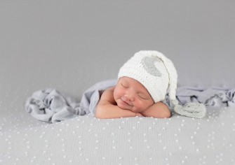
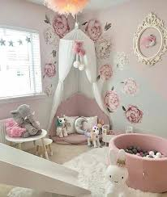
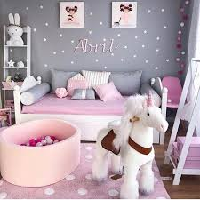
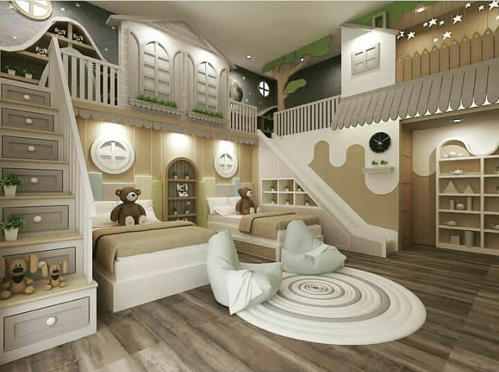

Connection and Love
The story of your baby and you
Your new little one has arrived and life has changed forever. We capture the milestones of your baby's life. My newborn sessions are unique and special in that not only include precious images of baby, but they also include YOU and the other special members of your family. These are the images they want to remember the most. The connection between you and your little one is so precious and so intimate.

WHAT TO EXPECT
Newborn sessions take place in your home or in a relaxed studio setting. We seek to capture the connection between you, your baby, and the rest of your family.
Studio decors
Welcome to our little corner of heaven. This studio is the embodiment of all the hard work and love. Our goal is to create a timeless approach, focused on you and your family. This gives you peace of mind, knowing you'll have the most beautiful memories to share and continually look back on.
  Contact us today at 773-232-0768